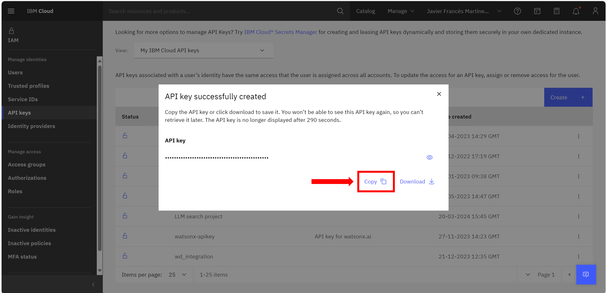
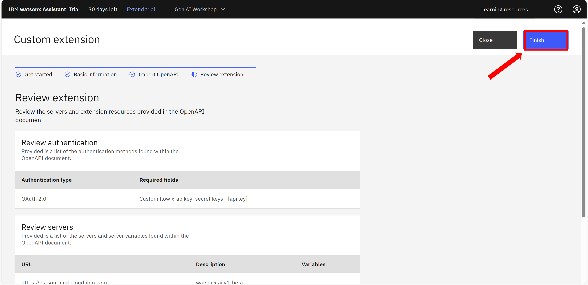

LLM-powered Conversational Search
In this session
Learn about IBM watsonx Assistant’s large language model (LLM)-powered conversational search: what it is, how it works, how to set it up, and how to use it.
What is conversational search?
Welcome back to the watsonx Assistant hands-on lab! During this lab, we will focus on conversational search, a LLM-powered feature that allows your virtual assistant to answer questions conversationally on a wide range of topics.
Process of conversational search
Conversational search is a feature in watsonx Assistant that allows a virtual assistant to search a knowledge base for information relevant to a question and use the relevant information to generate a conversational answer to the question. This feature is an adaptation of retrieval augmented generation (RAG), a standard technical approach to improving a LLM’s ability to answer questions accurately.
When it comes to enterprise use cases, where specialized and customer-specific information is involved, general purpose language models fall short. Fine-tuning these models with newcorpora can be expensive and time-consuming. The lab uses the RAG technique to address this challenge.
Conversational search involves several components: conversational AI, search, and a fine-tuned or prompt-engineered LLM.
Everyone’s heard of ChatGPT, and you can ask it anything – for example, what is a session variable?. It queries its large language model and generates a response:
The answer is generic and demonstrates the shortcomings of the typical LLM. It is not taking the answer from a trusted and accurate source of truth.
In this exercise, watsonx Assistant, by integrating with watsonx, will search a knowledge base for information to find an answer to a question and use that relevant information to generate a conversational answer to the query. As mentioned above, this is an adaptation of RAG.
Let’s walk through the order of operations in conversational search:
-
First, the end user asks the virtual assistant a question.
-
The virtual assistant uses its natural language understanding (NLU) model to determine whether it recognizes the question and whether it can answer it using one of its actions for which it has been trained. For example, a bank’s assistant is usually trained on answering a question such as, help me locate the nearest branch.
-
If the virtual assistant recognizes the question, it answers it using the appropriate action. Conversational search is not needed, and watsonx Assistant did not need to query the knowledge base nor call the LLM interation.
-
However, If the assistant does not recognize the question, it will go to conversational search.
-
-
With conversational search, the virtual assistant sends the end user’s question, also known as a query or request, to a search tool, in this exercise watsonx Discovery. Watsonx Discovery has read and processed all relevant corporate documents.
-
The search tool (watsonx Discovery) will then search its content and produce search results in response to the question.
-
The search tool passes these search results back to the virtual assistant in a list.
-
At this point, watsonx Assistant could display the results back to the user. However, they would not resemble natural speech; they would look like a summarized answer based on a search. Helpful – certainly – but not natural.
-
Therefore, watsonx Assistant sends the question and the list of search results to watsonx.ai, which invokes a large language model (LLM). In some implementations of conversational search, a LLM re-ranks the search results. It may reorder or disregard some of the search results according to how relevant and useful it thinks the search results are to the question. For example, a LLM might decrease the ranking of a search result if it is from a document that has not been updated recently, indicating the information may be out of date. This capability is often called a “neural re-ranker.”
-
The LLM generates an answer to the question using the information in the search results, and the LLM passes this answer back to watsonx Assistant.
-
The virtual assistant presents this conversational answer to the end user.
Advantages of conversational search
Answer traceability: In some implementations of conversational search, the virtual assistant may show the end user the search results that the LLM used to generate the answer. This allows the end user to trace the answer back to its source and confirm for themselves its accuracy. This capability is often called “answer traceability.”
Custom passage curation: In other implementations of conversational search, the virtual assistant also shows the end user snippets of the search results that the LLM used to generate the answer. These snippets might be direct quotes or 1-2 sentence summaries of the relevant information in each search result. This allows the end user to understand exactly what the LLM pulled out from the search result to craft its answer. This capability is often called “custom passage curation.”
Conversational search is much more than document summarization or simple search. It includes the entire process of recognition, search, and answer generation; sometimes also including a neural re-ranker, answer traceability, and custom passage curation. The value-add of watsonx Assistant in conversational search is its ability to orchestrate and connect every component of conversational search using its NLU model, no-code actions, OOTB connectors, and custom extensions.
Proposed Architecture
LLMs in conversational search
Now that we’ve established that this process uses LLMs – what specific LLMs are used in conversational search?
IBM watsonx Assistant uses large language models trained and deployed in watsonx for a variety of use cases, including conversational search. Assistant customizes watsonx LLMs for conversational search such that, given a question and a list of search results, they know how to re-rank the search results and then generate an answer from that list of search results. The watsonx Assistant team is working with IBM Research and the watsonx team to develop a custom, fine-tuned, and prompt-engineered large language model called Content-Grounded Assistant (CoGA) that specializes in generating answers from search results. CoGA is available in watsonx tech preview today. It will be available in watsonx later in Q3 2023.
In the meantime, while the watsonx Assistant team works to make CoGA available on watsonx, the watsonx Assistant team recommends using prompt-engineered FLAN-UL2-20b, an open- source model, to generate answers from search results. FLAN-UL2-20b is available in watsonx today.
Non-watsonx LLMs can also be fine-tuned or prompt-engineered to perform conversational search. These LLMs can be integrated with watsonx Assistant via extensions. This pattern may be preferable to clients who train their own LLMs in-house.
The value-add of watsonx in conversational search is its customized large language model, especially CoGA, designed and customized by the watsonx Assistant, IBM Research, and watsonx teams to perform well for conversational search.
Demonstrating conversational search
Following are the options available to IBMers and IBM business partners that would like to demo conversational search:
Search tool
In today's lab we will explore the following method for search and retrieval:
watsonx Discovery: This corresponds to semantic search method in a RAG architecture. This implementation will make use of an Elasticsearch instance as knowledge base, that has already been deployed for the purpose of this lab.
-
Semantic search, the “modern” approach, is the process finding an answer to a question by means of a context-based method.
-
Helps you find data based on the intent and contextual meaning of a search query, instead of a match on query terms.
-
The semantic search approach requires us to teach machines to understand and process the meaning of text.
-
This option requires to represent text passages as vectors, known as embeddings.
-
IBM watsonx Discovery makes use of a semantic search method for the search and retrieval phase of the RAG architecture.
[1] Connecting to the environment
-
Open the watsonx.ai console in https://dataplatform.cloud.ibm.com/wx
-
Make sure your account is itz-watsonx and the Region is Dallas.
[2] Create a watsonx.ai project
IBM watsonx.ai is an enterprise-ready AI and data platform designed to multiply the impact of AI across a client’s business. It provides an API for interacting with generative language models. In this step, you will create a watsonx project, which will later allow you to connect watsonx Assistant to the watsonx API.
First, navigate to the watson.ai portal’s main page. Then, create a new project by clicking the + button under Projects.
On the New project screen, 1. Enter a Name that is meaningful to you. 2. Optionally, enter a Description. 3. Select the Object storage service you created in a previous step. 4. Click Create.
Next, the Overview tab of your new watsonx project screen is shown.
You will need the watsonx project ID to set up the action that calls the watsonx custom extension in Assistant later. To get the watsonx project ID, select the Manage tab, then click copy
Save this project ID in a notepad for now, as you will need it shortly.
Next, you will link the Watson Machine Learning service instance you created earlier to this new watsonx project. To do this, select Services & integrations and click Associate service.
On the next screen, select the Watson Machine Learning instance that was deployed for the purpose of this demo and click Associate.
Setting up your watsonx extension in Assistant will also require an API key from your IBM Cloud account. To get the API key, in a new browser tab, navigate to Manage access and users-API Keys in IBM Cloud, which will take you to the following screen. Then, click Create.
On the popup Create IBM Cloud API key screen, enter a Name and Description meaningful to you, then click Create.
When you see the notification API key successfully created, click Copy.

[3] Load data into watsonx Discovery
Up until now, Watson Discovery was the service used for the creation of the Corporate Knowledge Base and the “Search and Retrieval” phase of the conversational search integration. If you recall from the theory part of this course, this method corresponds to lexical search, since we are searching for lexical similarities in the stored documents.
In this part of the laboratory, we want to make use of sematic search (instead of lexical) by connecting our current virtual agent with a vectorial database and retrieving the results based on the context and similarity of the passages instead of the traditional method used by Watson Discovery.Bastion password: y
For this reason, we are going to make use of the OpenAPI functionality to build our custom extension towards an ElasticSearch model. This model is known as ELSERv2 and has already been deployed to in an Elasticsearch service. In order to see where this ElasticSearch model is, open Elastic URL in a browser, authenticate with the following credentials:
→ Username: elastic
→ Password: l6Weh2QnnoqDM47662u6Q66r
Then, go to Machine Learning and click on Trained Models.
The ELSER Model that has been deployed will be the component in the RAG architecture in charge of transforming the text passages (as well as the text query) into embeddings, for its use in semantic search. ELSER is an out-of-domain model which means it does not require fine-tuning on your own data, making it adaptable for various use cases out of the box. For more information, please refer to this link. Additionally, ElasticSearch has the ability to integrate with third-party or proprietary models. For the full list of Elastic supported models refer to this link.
Download the following file:
Now we are going to load data into the Elasticsearch service. In order to do so go from the ElasticSearch main page to Machine Learning. Click on the section Data Vizualizer, then click on File. Click on “Select or drag and drop a File” and select the wa_docs_100.tsv file you just downloaded. The file contains 100 passages of watsonx Assistant documentation. There are three columns in this TSV file, title, section_title and text. The columns are extracted from the original documents. Specifically, each text value is a small chunk of text split from the original document.
Danger
Make sure all indexes and pipeliens are written in small caps.
Now, click on Override settings and then check Has header row checkbox because the example dataset has header row. Then, click close and import the data to a new Elasticsearch index and name it wa-docs-<name>, where <name> corresponds to your first name.
We have the passages uploaded into elastic in the form of an index. However, if we want to use the semantic search framework, we need to transform the text passages into vector representation. For this reason, we create an index with mappings for ELSER output. Execute from the bastion machine, that has been deployed for the purpose of the lab, the command to set as environment variables the URL, username and password.
Info
Note that you can copy the commands in this page by clicking the copy button in each code box:
Bastion password: snf5ebgW
ssh admin@api.667ac5d78dc418001f3fc3b8.cloud.techzone.ibm.com -p 40222
export ES_URL=https://elasticsearch-elastic.apps.667ac5d78dc418001f3fc3b8.cloud.techzone.ibm.com:443
export ES_USER=elastic
export ES_PASSWORD=l6Weh2QnnoqDM47662u6Q66r
Now, execute the following curl. Please edit the URL so that search-wa-docs-<name> contains your first name.
curl -X PUT "${ES_URL}/search-wa-docs-<NAME>?pretty" -u "${ES_USER}:${ES_PASSWORD}" \
-H "Content-Type: application/json" --insecure -d'
{
"mappings": {
"_source": {
"excludes": [
"text_embedding"
]
},
"properties": {
"text_embedding": {
"type": "sparse_vector"
},
"text": {
"type": "text"
}
}
}
}'
Notes
- search-wa-docs-<name> will be your index name.
- text_embedding is the field that will keep ELSER output when data is ingested, and sparse_vector type is required for ELSER output field.
- text is the input filed for the inference processor. In the example dataset, the name of the input field is text which will be used by ELSER model to process.
The output of the previous command should be something like:
{
"acknowledged" : true,
"shards_acknowledged" : true,
"index" : "search-wa-docs-javier"
}
Now that we have created out destination index to which the embeddings will be uploaded, we follow by creating an ingest pipeline with an inference processor. This ingest pipeline will be in charge of populating the destination index with data from our watsonx Assistant documentation source index. To do so execute from bastion machine the following curl command. Please edit the URL so that pipeline name elser-v2-test-<name> contains your first name.
curl -X PUT "${ES_URL}/_ingest/pipeline/elser-v2-test-<NAME>?pretty" -u "${ES_USER}:${ES_PASSWORD}" \
-H "Content-Type: application/json" --insecure -d'
{
"processors": [
{
"inference": {
"model_id": ".elser_model_2",
"input_output": [
{
"input_field": "text",
"output_field": "text_embedding"
}
]
}
}
]
}'
The output of the previous command should be something like:
{
"acknowledged" : true
}
Execute the following curl command for the ingestion to start. This command creates the tokens from the text by reindexing the data through the inference pipeline that uses ELSER as the inference model. Edit the curl so that the variable <name> corresponds to your first name.
curl -X POST "${ES_URL}/_reindex?wait_for_completion=false&pretty" -u "${ES_USER}:${ES_PASSWORD}" \
-H "Content-Type: application/json" --insecure -d'
{
"source": {
"index": "wa-docs-<name>"
},
"dest": {
"index": "search-wa-docs-<NAME>",
"pipeline": "elser-v2-test-<NAME>"
}
}'
Notes
- wa-docs-<name> is the index you created when uploading the example file to Elasticsearch cluster. It contains the text data.
- search_wa-docs-<name> is the search index that has ELSER output field.
- elser-v2-test-<name> is the ingest pipeline with an inference processor using ELSER model.
The output of the previous command should be something like:
{
"task" : "nkJhgkDtRTyQ05BcWI0o5g:87752"
}
Go in the Elasticsearch web interface to Content, then click on Indeces and wait for the search-wa-docs-<name> index appears with 100 Docs count.
Once the index is available, we can test the semantic search index, by executing the following curl command. Make sure that search-wa-docs-<name> corresponds to your previously created index.
curl -X GET "${ES_URL}/search-wa-docs-<NAME>/_search?pretty" -u "${ES_USER}:${ES_PASSWORD}" -H "Content-Type: application/json" --insecure -d'
{
"query":{
"text_expansion":{
"text_embedding":{
"model_id":".elser_model_2",
"model_text":"how to set up custom extension?"
}
}
}
}'
We are now ready to build the extension in watsonx Assistant for Elasticsearch API.
[4] Set up the assistant
To find your watsonx Assistant instance, go to the IBM Cloud homepage https://cloud.ibm.com/. Login with your username and make sure you are in the same account as the rest of the labs:
Click the List of resources button in the left-side menu.
Open the AI / Machine Learning section then click on the name of your watsonx Assistant instance.
From the watsonx Assistant instance launch page, click Launch watsonx Assistant.
This is a new assistant, so you will first configure the basics. First, enter its name, description, and click Next.
Customize the assistant to your linking, then click Next and Create.
[5] Adding the watsonx Discovery Semantical Search Extension
Download the OpenAPI specification for the watsonx Discovery integration (right-click in the following link -> download):
Use the OpenAPI specification to build a custom extension. Go to the Integrations page.
Then, click on Build custom extension.
Click on Next.
Enter the Extension name: watsonx Discovery, and click Next.
Add the OpenAPI specification, and click Next.
Review the extension and click Finish.
You have created the watsonx Discovery custom extension, and now you need to specify which watsonx Discovery instance it will access. On the popup window, click Add.
Click Next and configure the Authentication:
- Authentication type: Basic Auth
- Username: elastic
- Password: l6Weh2QnnoqDM47662u6Q66r
- elastic_url: elasticsearch-elastic.apps.667ac5d78dc418001f3fc3b8.cloud.techzone.ibm.com:443
Click Next and the Finish.
Why am I not using the watsonx Discovery built-in search extension?
An alternative to creating a custom Watsonx Discovery extension is to use the built-in search integration (also referred to as the Watson Assistant search skill). The search skill is a purpose- built integration between Assistant and Discovery for a simple, quicker, and easier experience.
However, it does not expose and use all of the API parameters and the full power of watsonx Discovery, which will be used by watsonx. For example, the built-in search skill has an "Emphasize the Answer" capability which allows Watson Assistant to identify the snippet of text within each response that it thinks is most likely to be the direct, concise answer to the question that was asked and will emphasize that text within the search result card. That can be a great feature when not using LLMs, but it can be detrimental when integrating with an LLM, especially if the result has no useful answer.
Furthermore, watsonx Discovery provides an answer confidence for each answer that provides an estimate of the probability that the answer is correct, so a user of watsonx Discovery can use that probability to decide whether the answer is plausible enough that it should be emphasized. This value corresponds with the semnatic similarity between the query vector and the retrieved stored vector. The built-in search integration in Watson Assistant does not expose the answer confidence because it is designed to provide simple, minimal functionality. In contrast, a custom extension lets you access all of the outputs of watsonx Discovery, so that low confidence answers can be ignored.
[6] Adding the watsonx.ai custom extension
Next, you will create the watsonx custom extension. First, download the watsonx OpenAPI specification file from the following link:
This JSON file defines the watsonx custom extension.
In watsonx Assistant, use the left menu to open the Integrations page. Then, scroll down and click the Build custom extension button.
This first screen describes what you’ll need to create the extension. Note that the watsonx OpenAPI JSON document, which you just obtained, is key to the setup. Click Next in the top right to proceed to the next screen.

The second screen asks you to name and describe the custom extension. Name it watsonx custom extension and add a description, like “Custom extension for watsonx”. Click Next to proceed to the next screen.
In the next screen, either drag-and-drop or click to upload the watsonx OpenAPI specification file OpenAPI spec you downloaded, then click Next to proceed to the next screen.
Click Finish to create the custom extension.

You should now be able to see the watsonx custom extension in your Integrations catalog. Click Add so that you can configure a connection to your watsonx project.
Click Add on the popup screen and hit Next on the following screen.
On the Authentication screen configure the following parameters: • Choose OAuth 2.0 as the Authentication type. • Select Custom apikey as the Grant type. • Copy and paste the IBM Cloud API key you saved earlier into the Apikey field. • Click Next.
Click Finish and Close on the final review screen.
[7] Upload and configure the watsonx actions
Next, you will upload the actions your assistant will need, so download the actions JSON file.
Note: You should not upload these actions directly into an existing assistant because doing so will overwrite your existing actions.
The actions in this file will use search only when no action matches the user request. They search a complete watsonx project, and as such they are general-purpose and usable with any data set.
To upload the JSON file, click Actions, and then Global Settings.
Scroll to the right until you are able to see and select the Upload/Download tab. There, drag and drop the actions JSON file, and click Upload.
Click Upload and upload the Gen-AI-Workshop-action file that you can download from the following link:
Then, click Close.
This file contains three actions:
-
Search: Connects to watsonx Discovery to search for documents related to the user query. The out-of-box "No Action Matches" action has been configured to send all input to this action, so whatever the user enters will be used as the search input. In turn, this action invokes the "Generate Answer" action to generate a response to the query.
-
Generate answer: Configures the query prompt and document passages resulting from the Search action and calls the action "Invoke watsonx generation API." It is not meant to be invoked directly, but rather by the "Search" action.
-
Invoke watsonx generation API: Connects to watsonx and, using as context the documents resulting from the search, asks the language model to generate an answer to the user query. It is not meant to be invoked directly, but rather by the "Generate Answer" action.
The actions JSON file you uploaded also includes variables used by the actions. You need to update two of them with your watsonx Discovery text embeddings index and watsonx project ID.
First, click on the index_name variable and set the Initial value to your index name. It should be something like search-wa-docs-<name>. Then, click Save.
Now, click on the variable watsonx_project_id and set the Initial value to the watsonx.ai’s project ID. Then, click Save.

This list describes the available variables providing for greater control over your model:
- model_id: The id of the watsonx model that you select for this action. Defaults to google/flan-ul2.
- model_input: The input to the watsonx model. You may change this to do prompt engineering, but a default will be used by the model if you don’t pass a prompt here.
- model_parameters_max_new_tokens: The maximum number of new tokens to be generated. Defaults to 300.
- model_parameters_min_new_tokens: The minimum number of the new tokens to be generated. Defaults to 1.
- model_parameters_repetition_penalty: Represents the penalty for penalizing tokens that have already been generated or belong to the context. The range is 1.0 to 2.0 and defaults to 1.1.
- model_parameters_stop_sequences: Stop sequences are one or more strings which will cause the text generation to stop if/when they are produced as part of the output. Stop sequences encountered prior to the minimum number of tokens being generated will be ignored. The list may contain up to 6 strings. Defaults to ["\n\n"]
- model_parameters_temperature: The value used to control the next token probabilities. The range is from 0 to 1.00; 0 makes it deterministic. model_response: The text generated by the model in response to the model input.
- passages: Concatenation of top search results.
- query_text: You may change this to pass queries to watsonx Discovery. By default the Search action passes the user’s input.text directly.
- search_results: Response object from Discovery query.
- snippet: Top results from the watsonx Discovery document search.
- verbose: A boolean that will print debugging output if true. Default is false.
- watsonx_api_version: watsonx api date version. It currently defaults to 2023-05-29.
- watsonx_project_id: You must set this value to be a project ID value from watsonx.
- index_name: the name of the index in watsonx Discovery.
Try it out!
Now that you are finished configuring your assistant, try it out! Click on Preview and enter the same question as before: what is a session variable?. Note the clear, concise, and conversational answer. Compare this to the generic answer from ChatGPT and the excerpt answer provided by Watson Discovery earlier!
The End
You have reached the end of this lab.